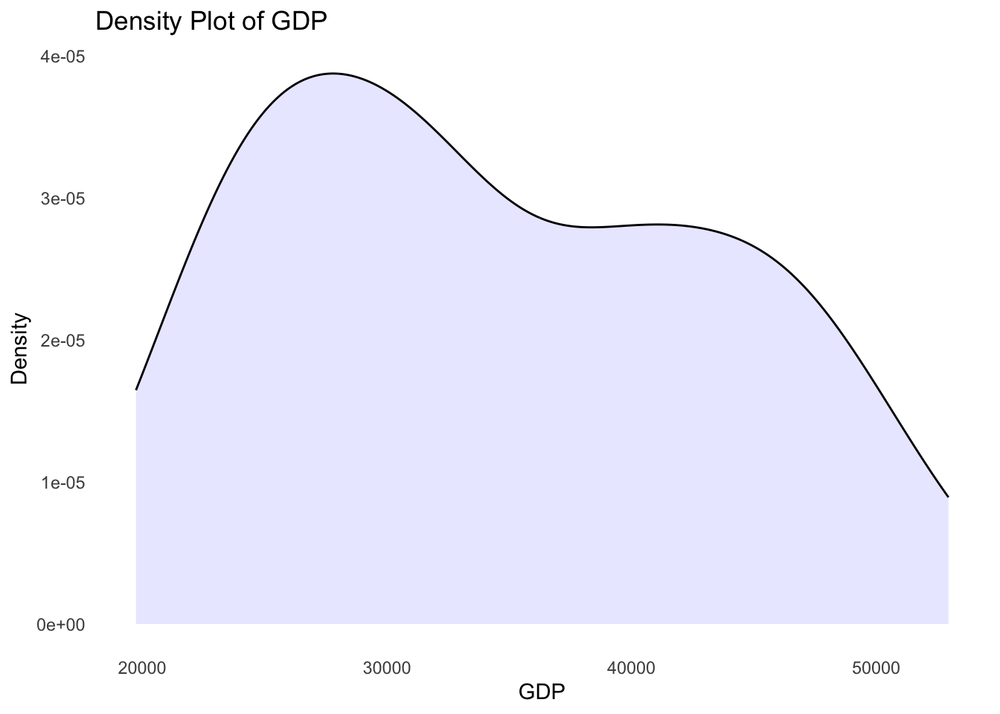
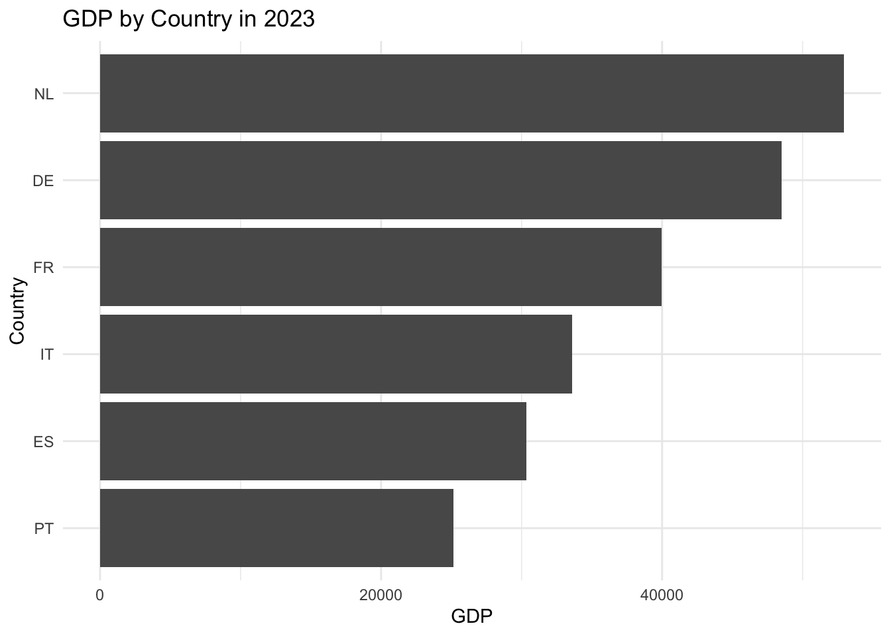
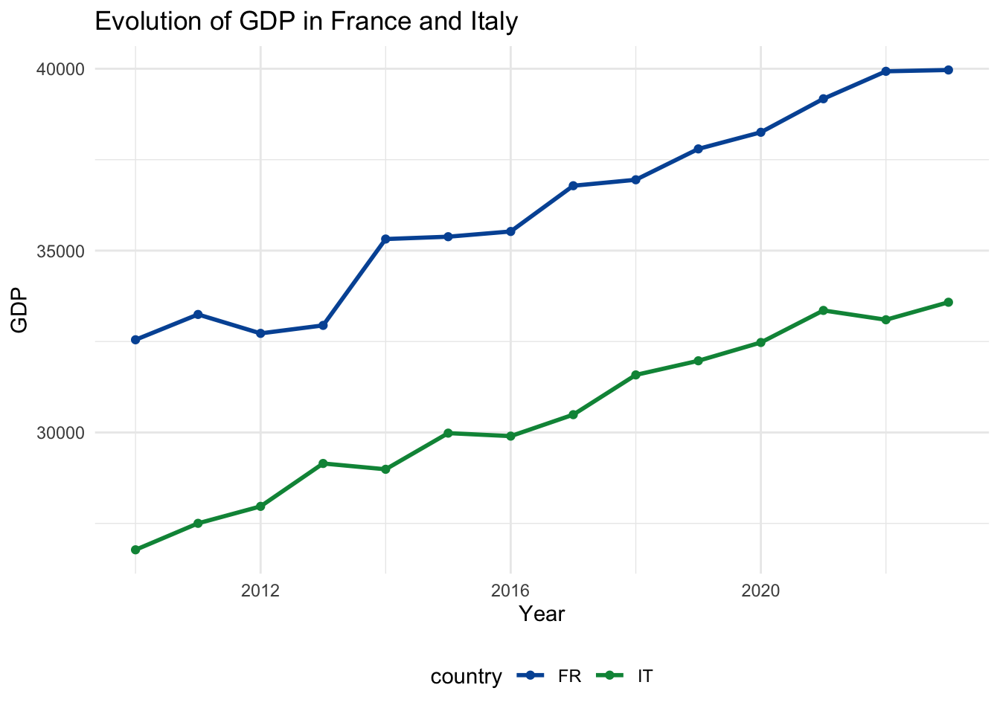

Tutorial #2. Data visualization and summary statistics
Introduction to programming for data analysis
M1 Economics / Intro to Programming / tutorial-2
tutorial-2/
data/
out/ gdp-lifesat.csv
scripts/
Disclaimer
This HTML page was generated with Claude Sonnet 5 based on exercises we developed from a LaTeX document.
If you would prefer to work with a more traditional PDF version, you can download it here: Download the PDF.
Part of the content was created by Pierre Michel (AMSE) and Morgan Raux (AMSE) who kindly shared their work.
In the previous tutorial, you downloaded datasets from Eurostat, merged them into a single dataset in R, and exported the result as a CSV file.
Objectives of the tutorial
In this tutorial, you will work with the dataset from the second exercise of Tutorial #1 to:
- explore it through basic summary statistics,
- create your first data visualizations in R using
ggplot2.
Did not finish tutorial 1?
Didn’t get to finish combining the data in Tutorial 1? Grab the ready-to-use file below and save it to the data/out/ folder of your project.
💡 Clean session
If you need to have a clean session in RStudio, first remove all the objects in memory by evaluating the following instruction:
Then, on the menu “Session”, click on “Restart R”.
Setup
Prepare a project for the second tutorial. Adopt the tree structure presented below. Note that launching your session via project.Rproj sets your active working directory to tutorial-2/.
tutorial-2/
data/
raw/
tmp/
out/
gdp-lifesat.csv
scripts/
figs/
tables/
references/
README.md
project.Rproj
Q1. Import the dataset you exported at the end of Tutorial #1 (gdp-lifesat.csv, assumed to be copied into your data entry structure).
The file lives in your data/out/ folder — build the relative path from your project root (tutorial-2/).
library(readr)
# Assuming the file was moved to the data output folder of the project root
tb <- read_csv("data/out/gdp-lifesat.csv")Rows: 84 Columns: 4
── Column specification ────────────────────────────────────────────────────────
Delimiter: ","
chr (1): country
dbl (3): year, gdp, life_satisf
ℹ Use `spec()` to retrieve the full column specification for this data.
ℹ Specify the column types or set `show_col_types = FALSE` to quiet this message.# A tibble: 84 × 4
country year gdp life_satisf
<chr> <dbl> <dbl> <dbl>
1 FR 2010 32548. 6.72
2 IT 2010 26774. 6.59
3 DE 2010 38145. 7.17
4 ES 2010 24253. 6.67
5 NL 2010 42162. 7.94
6 PT 2010 19958. 6.42
7 FR 2011 33245. 7.13
8 IT 2011 27502. 6.45
9 DE 2011 39567. 7.32
10 ES 2011 24455. 6.93
# ℹ 74 more rowsPlot Distributions
Q2. Read the following code, evaluate it, and explain what it does.
This block initialises a graphic via ggplot2 using the tb dataset. It maps the continuous metric gdp to the x-axis and draws an empirical density distribution via geom_density(), filled with light blue (10% opacity). It adds clean labels and applies a minimal theme. The background grid lines are removed.

Q3. Using the ggsave() function, export this graph as a PDF file in the figs folder of your project environment.
Q4. Plot the distribution of the variable measuring life satisfaction using a histogram:
- Label the x-axis as “Overall life satisfaction”.
- Remove the y-axis title.
- Add the plot title “Histogram of Overall life satisfaction”.
Use geom_histogram(), and set y = NULL inside labs() to remove an axis title.
Summary Statistics
Q5. Examine and evaluate the following instructions. Then, explain what they do.
This pipeline of instructions extracts the features gdp and life_satisf from the data frame tb and passes them directly into R’s base summary function summary(). This returns the descriptive quantities (Minimum, 1st Quartile, Median, Mean, 3rd Quartile, Maximum) alongside missing item flags (NAs) per variable.
gdp life_satisf
Min. :19737 Min. :6.190
1st Qu.:26864 1st Qu.:6.628
Median :33021 Median :6.875
Mean :34481 Mean :7.013
3rd Qu.:42175 3rd Qu.:7.322
Max. :52955 Max. :8.100 Q6. Create a table of summary statistics for the variables gdp and life_satisf. The table should include the following statistics: mean, standard deviation, minimum, maximum. Round all values to two decimal places. The resulting table must have two rows (one for gdp, one for life_satisf). Name this table summary_stats.
To get one row per variable, first reshape the two columns into a long format with pivot_longer().
Then group_by(var) and summarise() with mean(), sd(), min(), max(), each wrapped in round(..., 2).
Using tidyverse strategies to explicitly construct long summaries:
library(tidyr)
summary_stats <- tb |>
select(gdp, life_satisf) |>
pivot_longer(
cols = everything(), names_to = "var", values_to = "val"
) |>
group_by(var) |>
summarise(
mean = round(mean(val, na.rm = TRUE), 2),
sd = round(sd(val, na.rm = TRUE), 2),
min = round(min(val, na.rm = TRUE), 2),
max = round(max(val, na.rm = TRUE), 2)
)
summary_stats# A tibble: 2 × 5
var mean sd min max
<chr> <dbl> <dbl> <dbl> <dbl>
1 gdp 34481. 9116. 19737. 52955.
2 life_satisf 7.01 0.52 6.19 8.1Q7. Examine and evaluate the following instruction. Then, explain what it does.
It replaces the names of the columns in the summary_stats summary table with those provided in the vector (c()). Here the names happen to already match, so the table is unchanged — but this instruction is what you would use to rename columns coming out of a pipeline with less convenient default names.
# A tibble: 2 × 5
var mean sd min max
<chr> <dbl> <dbl> <dbl> <dbl>
1 gdp 34481. 9116. 19737. 52955.
2 life_satisf 7.01 0.52 6.19 8.1Q8. Print the content of the object summary_stats as a LaTeX-formatted table. To do so, use the {stargazer} package. Adapt the following code:
Save the LaTeX table into a file named summary_stats.tex inside your output data subfolder.
Please cite as: Hlavac, Marek (2022). stargazer: Well-Formatted Regression and Summary Statistics Tables. R package version 5.2.3. https://CRAN.R-project.org/package=stargazer
% Table created by stargazer v.5.2.3 by Marek Hlavac, Social Policy Institute. E-mail: marek.hlavac at gmail.com
% Date and time: Sat, Aug 22, 2026 - 23:47:50
\begin{table}[!htbp] \centering
\caption{}
\label{}
\begin{tabular}{@{\extracolsep{5pt}} cccccc}
\\[-1.8ex]\hline
\hline \\[-1.8ex]
& var & mean & sd & min & max \\
\hline \\[-1.8ex]
1 & gdp & 34480.95 & 9116.3 & 19737.4 & 52955.4 \\
2 & life\_satisf & 7.01 & 0.52 & 6.19 & 8.1 \\
\hline \\[-1.8ex]
\end{tabular}
\end{table} Rank countries by GDP in 2023
Q9. Create an object called tb_2023 that contains only the rows of the dataset where the year is 2023.
Q10. Examine and evaluate the following instruction. Then, explain what it does.
This instruction prints a sorted horizontal bar chart. reorder(country, gdp) orders the categorical country axis sequentially by their corresponding value metric (that of variable gdp). geom_bar(stat = "identity") maps raw values directly to lengths, and coord_flip() rotates the layout by 90 degrees, swapping the x- and y-axes.

Q11. Create an object called data_filtered that contains only the rows of the dataset where the year is either 2014 or 2023.
Use %in% with a two-element vector, rather than two chained == conditions.
# A tibble: 12 × 4
country year gdp life_satisf
<chr> <dbl> <dbl> <dbl>
1 FR 2014 35318. 7.01
2 IT 2014 28988. 6.6
3 DE 2014 40937. 7.28
4 ES 2014 25215. 6.8
5 NL 2014 45544 7.81
6 PT 2014 21344 6.3
7 FR 2023 39966. 7.18
8 IT 2023 33580. 6.71
9 DE 2023 48485. 7.55
10 ES 2023 30343. 7.17
11 NL 2023 52955. 7.91
12 PT 2023 25152. 6.63Q12. Examine and evaluate the following instruction. Then, explain what it does.
It sorts rows first chronologically by year, then sorts the observations in descending order of cross-sectional gdp within each temporal block.
# A tibble: 12 × 4
country year gdp life_satisf
<chr> <dbl> <dbl> <dbl>
1 NL 2014 45544 7.81
2 DE 2014 40937. 7.28
3 FR 2014 35318. 7.01
4 IT 2014 28988. 6.6
5 ES 2014 25215. 6.8
6 PT 2014 21344 6.3
7 NL 2023 52955. 7.91
8 DE 2023 48485. 7.55
9 FR 2023 39966. 7.18
10 IT 2023 33580. 6.71
11 ES 2023 30343. 7.17
12 PT 2023 25152. 6.63Q13. Create a barplot ranking countries in decreasing order of GDP, with two panels: the left panel for year 2014, the right panel for year 2023. The plot should have:
- the x-axis titled “GDP”,
- no y-axis title,
- the main title “GDP by Country in 2014 and 2023”.
Use facet_wrap(~year) on top of the same bar chart recipe as Q10, then swap which axis gets the NULL label.
Rank countries by change in GDP between 2014 and 2023
Q14. Create a new variable called change_gdp that measures the within-country change in GDP between 2014 and 2023.
This is a within-country comparison across years, so you need one row per country: reshape the data with pivot_wider() so that each year’s GDP becomes its own column.
pivot_wider(names_from = year, values_from = gdp, names_prefix = "gdp_") gives you columns gdp_2014 and gdp_2023. Then simply subtract them with mutate().
To extract delta values properly across years from wide or long frames:
tb_change <- tb |>
filter(year %in% c(2014, 2023)) |>
select(country, year, gdp) |>
pivot_wider(names_from = year, values_from = gdp, names_prefix = "gdp_") |>
mutate(change_gdp = gdp_2023 - gdp_2014)
tb_change# A tibble: 6 × 4
country gdp_2014 gdp_2023 change_gdp
<chr> <dbl> <dbl> <dbl>
1 FR 35318. 39966. 4648.
2 IT 28988. 33580. 4592.
3 DE 40937. 48485. 7548
4 ES 25215. 30343. 5128.
5 NL 45544 52955. 7411.
6 PT 21344 25152. 3808.Q15. Examine and evaluate the following instruction. Then, explain what it does.
It isolates cross-sectional observations from 2023 from the data frame tb and assigns the resulting data frame in an object named tb_2023.
# A tibble: 6 × 4
country year gdp life_satisf
<chr> <dbl> <dbl> <dbl>
1 FR 2023 39966. 7.18
2 IT 2023 33580. 6.71
3 DE 2023 48485. 7.55
4 ES 2023 30343. 7.17
5 NL 2023 52955. 7.91
6 PT 2023 25152. 6.63Q16. Create a barplot ranking countries in decreasing order of their change in GDP (between 2014 and 2023). The plot should have:
- the x-axis titled “Change in GDP”,
- no y-axis title,
- the main title “Change in GDP by Country between 2014 and 2023”.
Evolution of GDP in France and Italy
Q17. Create an object called tb_france_italy that contains rows of the dataset tb where the country is either “France” or “Italy”.
# A tibble: 28 × 4
country year gdp life_satisf
<chr> <dbl> <dbl> <dbl>
1 FR 2010 32548. 6.72
2 IT 2010 26774. 6.59
3 FR 2011 33245. 7.13
4 IT 2011 27502. 6.45
5 FR 2012 32724. 6.77
6 IT 2012 27968. 6.32
7 FR 2013 32944. 6.81
8 IT 2013 29148 6.84
9 FR 2014 35318. 7.01
10 IT 2014 28988. 6.6
# ℹ 18 more rowsQ18. Using the dataset tb_france_italy, create a line plot showing the year-by-year evolution of GDP for France and Italy (one line per country). Include a legend to indicate which line corresponds to each country.
Bonus: use blue (#0055A4) for France and green (#009246) for Italy. Place the legend below the graph. Title the y-axis “GDP”.
Map color = country (and group = country) inside aes() so ggplot2 draws one line per country and builds the legend automatically.
For custom colors, use scale_color_manual(values = c("FR" = ..., "IT" = ...)). For the legend position, set theme(legend.position = "bottom").
ggplot(data = tb_france_italy, mapping = aes(x = year, y = gdp, color = country, group = country)) +
geom_line(linewidth = 1) +
geom_point() +
scale_color_manual(values = c("FR" = "#0055A4", "IT" = "#009246")) +
labs(
x = "Year",
y = "GDP",
title = "Evolution of GDP in France and Italy"
) +
theme_minimal() +
theme(legend.position = "bottom")
Introduction to Programming for Data Analysis — Master 1 in Economics